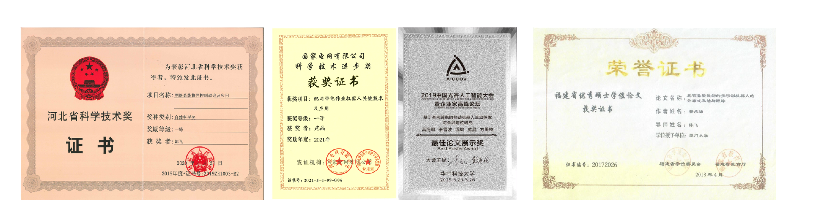
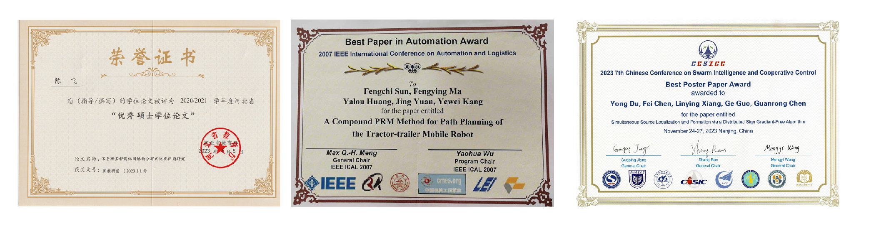
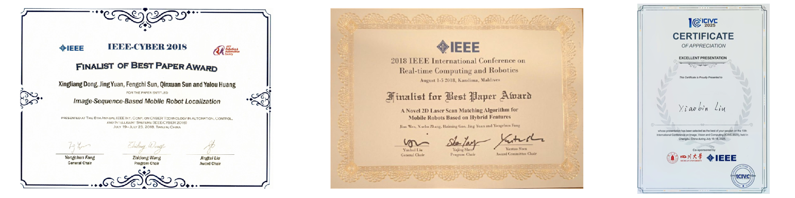

科研奖项
1.天津市杰出青年科学基金资助，苑晶
2.南开大学百名青年学科带头人培养计划，苑晶
3.斯坦福大学/Elsivier全球前2%顶尖科学家榜单，苑晶
4.2021年，国家电网科技进步一等奖，苑晶
5.斯坦福大学/Elsivier全球前2%顶尖科学家榜单，陈飞
6.河北省自然科学奖一等奖（排名第二），陈飞
7.河北省自然科学基金杰出青年项目，陈飞
8.福建省高等学校新世纪优秀人才支持计划，陈飞
9.河北省三三三人才（第三层次），陈飞
10.南开大学百名青年学科带头人，陈飞
论文奖项
1.Best Paper in Automation Award, IEEE International Conference on Automation and Logistics, 2007
2.Finalist for Best Paper Award, IEEE Annual International Conference on CYBER Technology in Automation, Control, and Intelligent Systems, 2018
3.Finalist for Best Paper Award, IEEE International Conference on Real-time Computing and Robotics, 2018
4.最佳论文展示奖, 中国光谷人工智能大会, 2019
5.自动化学报优秀审稿专家, 2020
6.全国集群智能与协同控制大会最佳海报论文奖
7.全国复杂网络会议最佳学生论文提名奖（指导导师）
8.IEEE Transactions on Control of Network Systems杰出审稿人
  